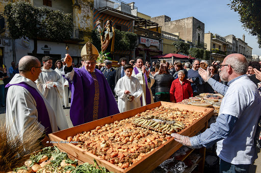

Metti le mani in pasta con le nostre massaie.

I nostri laboratori celebrano i sapori legati alle festività. Imparerai i segreti del grano, la lavorazione della pasta fresca e la preparazione dei piatti devozionali tipici della festa di San Giuseppe.
È un incontro autentico tra generazioni, dove la cucina diventa custode di memoria e identità.
Tutte le esperienzeLa storia e la lavorazione del grano duro pugliese, dalla spiga alla tavola.
Tecniche tradizionali per orecchiette, sagne 'ncannulate e altri formati locali.
I pani devozionali di San Giuseppe, sculture commestibili di una tradizione viva.